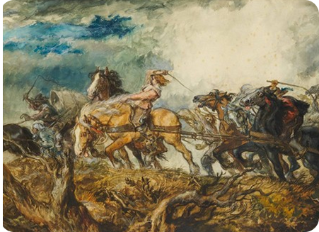
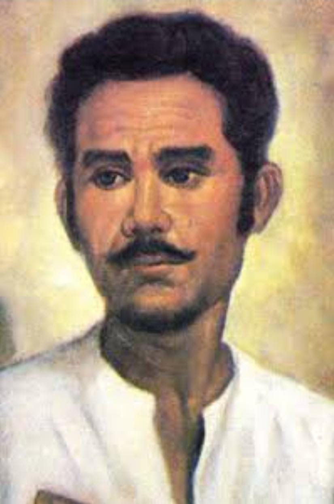

SEJARAH PERANG PATTIMURA
Mengenal Perang Pattimura 1817
PENGERTIAN
Perang Pattimura adalah perlawanan rakyat Maluku terhadap Belanda yang terjadi pada tahun 1817. Pertempuran ini dipimpin oleh Thomas Matulessy atau Kapitan Pattimur
Alasan Belanda menyerang Maluku
Pada tanggal 15 Mei 1817, di Maluku, Indonesia, Belanda menjajah wilayah tersebut dengan tujuan untuk memonopoli perdagangan rempah-rempah, memperluas pengaruhnya, dan mengganggu kehidupan masyarakat Maluku. Penjajahan ini dilakukan karena Maluku dikenal sebagai daerah yang kaya akan rempah-rempah, sehingga Belanda ingin menguasai perdagangan di wilayah tersebut sepenuhnya

Hasil Pertempuran
Kapitan Pattimura dan pasukannya melawan Belanda dengan strategi perang gerilya, memobilisasi rakyat, dan membangun kerja sama. Mereka menghindari pertempuran langsung, menggunakan taktik hit and run, jebakan, serta memanfaatkan medan sulit dan pengetahuan lokal. Pattimura juga berhasil menyatukan rakyat dari berbagai latar belakang. Namun, meskipun perlawanan mereka kuat, Belanda akhirnya berhasil menumpas pemberontakan tersebut
Nilai yang dapat diambil dan diaplikasikan pada masa kini
Nilai-nilai yang dapat diambil dari perjuangan Kapitan Pattimura antara lain semangat juang yang tinggi, jiwa kepemimpinan yang kuat, rasa keadilan sosial, cinta tanah air yang mendalam, serta kegigihan dalam mencari ilmu sebagai bekal untuk memperjuangkan kemerdekaan dan kebenaran
CUPLIKAN VIDEO YOUTUBE
src : @Banggopalinginbahagia
Tokoh Dan Pemimpin

KAPITAN PATTIMURA
MARTHA CHRISTINA TIJAHAHU

ANTHONY RHEBOK

THOMAS MATULESSY
JOHANNES RUDOLF VAN DER BERG

?
?
?
?
?